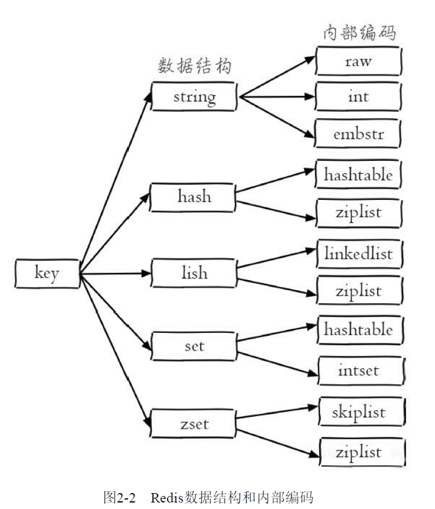

1. api使用
1.1. 预备
-
全局命令
- keys *
-
查看所有键
- dbsize
-
键总数
- exists
-
键是否存在
- del
-
删除键，存在返回1,不存在返回0,可以删除多个键
127.0.0.1:6379> del not_exist_key (integer) 0 127.0.0.1:6379> set a 1 OK 127.0.0.1:6379> set b 2 OK 127.0.0.1:6379> set c 3 OK 127.0.0.1:6379> del a b c (integer) 3 - expire
-
键过期
`ttl`命令返回键过期时间，有三种返回值：
大于0：键剩余的过期时间
-1：键没有设置过期时间
-2：键不存在127.0.0.1:6379> set a 1 OK 127.0.0.1:6379> expire a 100 (integer) 1 127.0.0.1:6379> ttl a (integer) 90 127.0.0.1:6379> ttl a (integer) 87 127.0.0.1:6379> del a (integer) 1 127.0.0.1:6379> ttl a (integer) -2
- type
-
键的数据结构类型
-
数据结构和内部编码
 -
单线程架构
-
单线程模型，不存在并发问题
-
为什么单线程能这么快？
-
纯内存访问
-
非阻塞I/O
-
单线程避免了线程切换和竞态产生的开销
-
-
| 如果某个命令执行过长，会阻塞其他命令，对于Redis这种高性能的服务来说是致命的。 |
1.2. 字符串（string）
-
set127.0.0.1:6379> set hello world OK 127.0.0.1:6379> setnx hello redis (integer) 0 127.0.0.1:6379> set hello jedis xx OK 127.0.0.1:6379> set hello jedis nx (nil)
setnx可实现分布式锁： http://redis.io/topics/distlock
-
get127.0.0.1:6379> set hello redis OK 127.0.0.1:6379> get hello "redis" 127.0.0.1:6379> get not-exists (nil)
-
批量
127.0.0.1:6379> mset a 1 b 2 c 3 OK 127.0.0.1:6379> mget a b c 1) "1" 2) "2" 3) "3"
-
incr127.0.0.1:6379> exists a (integer) 0 127.0.0.1:6379> incr a (integer) 1 127.0.0.1:6379> set b 10 OK 127.0.0.1:6379> incr b (integer) 11 127.0.0.1:6379> decr a (integer) 0 127.0.0.1:6379> decr a (integer) -1
-
其他命令
append key value strlen key setrange key offset value getrange key start end
-
典型使用场景
-
缓存
-
计数
-
session
-
限速
代码 1. 伪代码phone="128xxxxxxxxxx" key = "shortmsg:limit:" + phone isexists = redis.set(key, 1, "ex 60", ”nx“) if (isexists != null || redis.incr(key) <= 5) { // 通过 } else { // 限速 }
-
1.3. 哈希（hash）

图 1. redis hash
1.4. 列表（list）

代码 2. 列表操作
127.0.0.1:6379> flushall OK 127.0.0.1:6379> rpush mylist c b a (integer) 3 127.0.0.1:6379> lrange mylist 0 -1 1) "c" 2) "b" 3) "a" 127.0.0.1:6379> lpush mylist x y (integer) 5 127.0.0.1:6379> lrange mylist 0 -1 1) "y" 2) "x" 3) "c" 4) "b" 5) "a" 127.0.0.1:6379> linsert mylist before x java (integer) 6 127.0.0.1:6379> lrange mylist 0 -1 1) "y" 2) "java" 3) "x" 4) "c" 5) "b" 6) "a" 127.0.0.1:6379> lindex mylist -1 "a" 127.0.0.1:6379> llen mylist (integer) 6 127.0.0.1:6379> lpop mylist "y" 127.0.0.1:6379> lpop mylist "java" 127.0.0.1:6379> llen mylist (integer) 4 127.0.0.1:6379> lrem mylist 0 x (integer) 1 127.0.0.1:6379> ltrim mylist 1 3 OK 127.0.0.1:6379> lrange mylist 0 -1 1) "b" 2) "a" 127.0.0.1:6379> blpop mylist 3 1) "mylist" 2) "b" 127.0.0.1:6379> blpop mylist 3 1) "mylist" 2) "a" 127.0.0.1:6379> blpop mylist 3 (nil) (3.00s)
应用场景
-
lpush+lpop=Stack(栈)
-
lpush+rpop=Queue(队列)
-
lpush+ltrim=Capped Collection(有限集合)
-
lpush+brpop=MQ(消息队列)
1.5. 集合（set）
-
命令
127.0.0.1:6379> sadd myset a b c (integer) 3 127.0.0.1:6379> sadd myset a b (integer) 0 127.0.0.1:6379> srem myset a b (integer) 2 127.0.0.1:6379> srem myset hello (integer) 0 127.0.0.1:6379> scard myset (integer) 1 127.0.0.1:6379> sismember myset c (integer) 1 127.0.0.1:6379> srandmember myset "c" 127.0.0.1:6379> smembers myset 1) "c"
-
使用场景
-
sadd=标签
-
spop/srandmember=生成随机数，比如抽奖
-
sadd+sinter=社交需求
-
1.6. 有序集合(zset)
-
使用场景：排行榜系统
1.7. 键管理
-
重命名
127.0.0.1:6379> mset a java b lua OK 127.0.0.1:6379> rename a c OK 127.0.0.1:6379> get a (nil) 127.0.0.1:6379> get c "java" 127.0.0.1:6379> keys * 1) "c" 2) "myset" 3) "b" 127.0.0.1:6379> renamenx c b (integer) 0
-
随机返回一个键
127.0.0.1:6379> dbsize (integer) 3 127.0.0.1:6379> randomkey "myset" 127.0.0.1:6379> randomkey "myset" 127.0.0.1:6379> randomkey "b"
-
键过期
-
expire expireat pexpire pexpireat pttl persist
-
expire key的键不存在，返回结果为0
-
对于字符串类型的键，
set命令会去掉过期时间，这在开发中容易被忽视 -
setnx是set+expire的组合，是原子命令
-
-
遍历键
scan 命令：
127.0.0.1:6379> scan 0
1) "26"
2) 1) "h"
2) "m"
3) "q"
4) "x"
5) "s"
6) "n"
7) "j"
8) "u"
9) "o"
10) "r"
127.0.0.1:6379> scan 26
1) "19"
2) 1) "d"
2) "f"
3) "e"
4) "t"
5) "c"
6) "k"
7) "v"
8) "a"
9) "w"
10) "i"
127.0.0.1:6379> scan 19
1) "0"
2) 1) "g"
2) "b"
3) "l"
4) "p"
-
管理数据库
dbsize flushall flushdb select
2. 小功能大用处
2.1. 慢查询
-
配置参数
slowlog-log-slower-than: 阈值，单位微妙 slowlog-max-len: 最大多少条日志，特殊值0：记录所有，<0:任何命令不记录
-
慢查询命令
# 获取慢查询日志 slowlog get # 获取慢查询日志列表当前的长度 slowlog len # 慢查询日志重置 slowlog reset